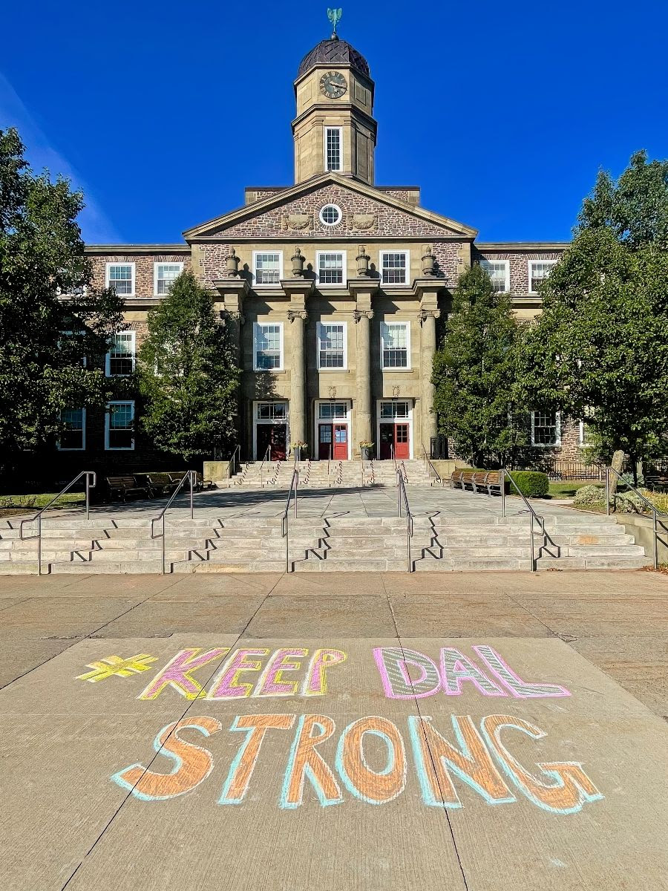
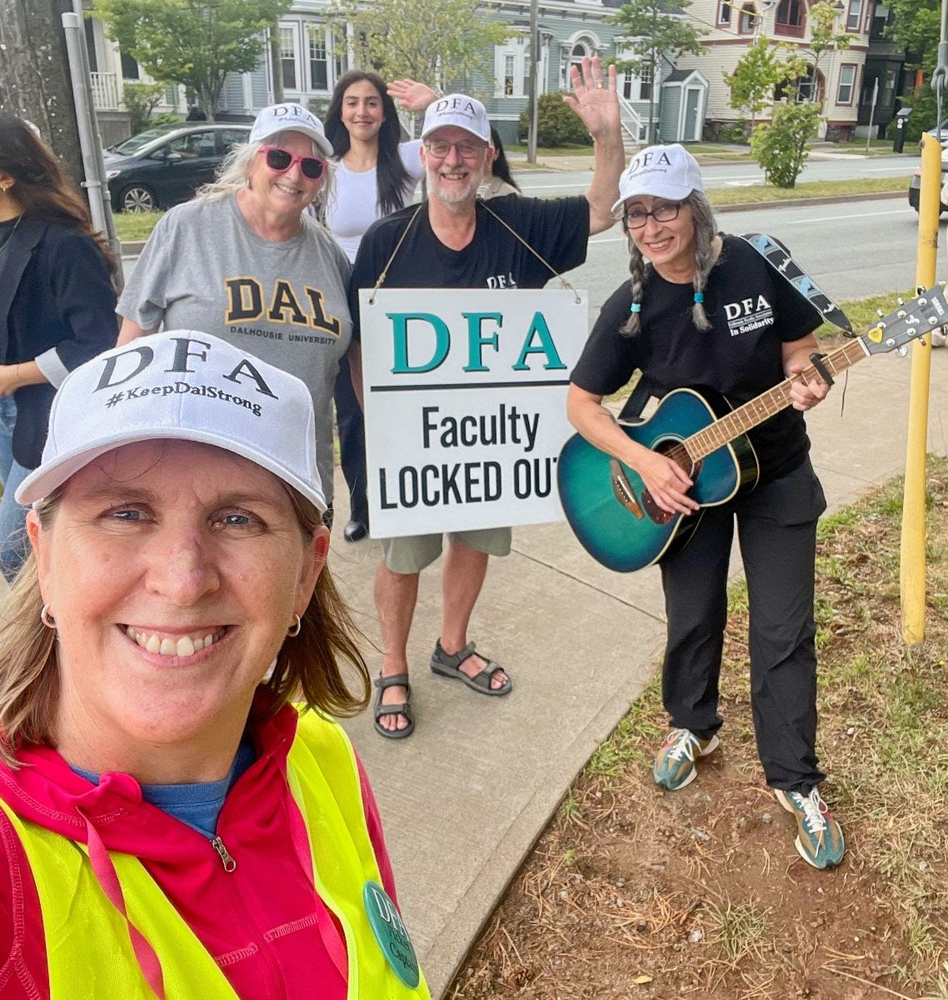

Daily Bulletin #5, September 2
Have an idea for something to cover?


Chalking, Talking, Solidarity, and Back to School
Today will be one of mixed emotions for many of us. As our colleague Krista Kesselring says in our new “Humans of Dalhousie” series, students’ excitement (and nervousness!) on the first day of Fall term is always matched by our own.
The administration’s lockout and refusal to bargain have taken all that away from us for now, and most upsettingly from our students. It’s… well, it’s infuriating, and it’s tremendously sad.
But the past week our spirits have been buoyed by all of the solidarity efforts that remind us that we are fighting for something much bigger than the first day of classes—for the future of Dalhousie. Universities are sustained by people, not buildings or cash reserves.
Our students’ support especially has energized a lot of us, which is why we wanted to share some of their amazing social media campaigns below (and yes, as they make clear, they are better at this!).
This past Friday, students also joined us at the rally where, once again, other unions came out to support our fight for a fair bargaining process. CAUT’s flying pickets from across the country came to support us, too. More than one person told us they were deeply moved when our sibling unions assembled in front of a massive crowd of colleagues, allies, and students. The same solidarity and emotion were also present at the Halifax-Dartmouth Labour Council’s Labour Day BBQ, where our own Dave Westwood spoke.
Friday was also special for the “Chalk and Talk,” about which we’ve had a lot of positive feedback! Seeing the sidewalks all over campus and beyond covered with colourful statements of support will be long remembered as a literal bright spot of this lockout. The real reward, though, was the opportunity to talk to our students and give them context for the lockout and our efforts to get back to the bargaining table—and back to work.
We’re still waiting for the Board to return to bargaining. But we return to the picket lines with a new schedule and new chances to meet more colleagues. The friendships forged on the picket lines last month and now in September will continue for years as well as strengthen our resolve and our solidarity. It’s solidarity that will bring this lockout to a positive end.
So today might be a difficult one, but we hope it’s also a reinvigorating one! Think back to these moments and remember: we’re fighting for each other to have better working conditions, for our students to have better learning conditions, and for our colleagues and communities to have hope for a better future. That’s why we’re here.
“Humans of Dalhousie”
Colleagues Bart Vautour and Erin Wunker have started a new series on our Instagram called “Humans of Dalhousie.” Modelled on the well-known “Humans of New York,” these stories aim not only to profile some of us (and, in a side series, “Pets of Dalhousie,” for our animal buddies!), but also to capture the sense of community that we feel and build every day. The first installment here, with Krista Kesselring, reminds us what the first day of term is all about.
HUMANS OF DALHOUSIE: “FIRST WEEK WOES”: “Dalhousie’s Board is upending the normal start of semester. What did your first week of university mean to you as a student? What does it mean to you as a teacher?”
DR. KRISTA KESSELRING (HISTORY) “Now, as a teacher, the first week of term is usually my favorite of the year: the charged mix of old and new, the ‘back-to-school’ energy of reconnecting with colleagues and senior students heightened by the buzz of welcoming newcomers. But back in my own first week as a student — here at Dal — I found it all vastly disconcerting. I came from rural New Brunswick — a place with roads, not streets, numbered not named — and found the ‘big city’ of Halifax in equal parts exciting and confusing (Pizza delivered to the door! Concerts at the Cohn! But also, getting very lost my first time taking the No. 1 bus, the wrong way…). Figuring out university expectations on top of the basics of city life was tough. I volunteer to teach first-year courses now, in part because I can still feel (not just remember) that ambivalence and I like to think that I can help students similarly bewildered not just learn but learn to love this place as I came to do. For many years, I was proud of being both a Dal alumna and prof, a pride I felt especially strongly in the first week of the new year.”
Student Solidarity
Sending huge thanks and gratitude to the students who came to our rally on Friday, to those showing support on the lines every day, and to their truly amazing efforts on social media (including one post linked below that identified some of our members’ … difficulties with the medium, which has made a few of those involved laugh out loud!). Click on the images below.
Labour Day
For those unable to make it to the Halifax-Dartmouth Labour Council’s Labour Day Parade and BBQ, here are some highlights!
Reminders
From the Job Action Committee: Thanks to our incredible librarian colleagues, Julie Marcoux, Shelley McKibbon, Jackie Phinney, and many, many more colleagues, JAC was able to get the new picket schedules out on Friday night for all 1000 of us. These went to our alt-emails: if you haven’t seen it, please check your junk folder for an email from DFA Strike Scheduling scheduling.dfastrike2025@gmail.com. Those who signed up for PayWorks should have also received their first job action pay on Friday. If there are any significant issues, please check in with Strike HQ.
LTA Letter: A reminder to sign the letter of support for our colleagues on limited-term appointments.
- Read the linked letter
- Click at the top to offer your support by signing the letter.
Shout outs from the Line
Karen Curry, captain for the 12:45 University Ave picket, sends a big shout out to Jennifer Storm for bringing her guitar to University Ave 1245 line!
